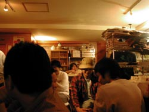
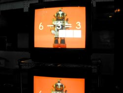
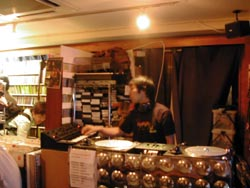

strange music page
* * * strange music night #2 (2004.6.12)
#そんな訳で、このサイトのイベントとしては２回目。１回目の時は近所のお店借りて（既に潰れてたんだけど）やってたのに、今回は高円寺円盤にて。高円寺円盤はTRANSONIC RECORDの永田一直さんとOZ DISCの田口史人さんの運営する、CDショップ/喫茶店/バー/イベントスペースでして。「こんな所でやってイイのかなぁ〜」と小心者っぷりを発揮してたんですが。
まぁそのとりあえず、深夜の高円寺ではハルヲさんの持ってきたカリキュラマシーンのDVD（面白かった）とか、satomilkさんの持ってきたGSのビデオとかが流れ。その後ろで↓こんな感じのDJをしてました。



（かたる様、写真どうもです）
折田尊子 |
菅原悠 |
satomilk |
Sasaki Naoyuki |
ウツボカズラ |
クドウハルヲ |
河奥修也 |
菅原圭
#えーとあのその、トップバッターらしい感じで良かったっす。
Super Sistersがエライ格好良かった、こんどCD買お。
- Weather Report
- Hermeto Pascoal
- Super Sisters
- Devil Menthol
- Zahl
- Meat Beat Manifest
- Holger Hiller
- シズオ
- Mats & Morgan
- Potratch
#アナログのみ、器用に２枚ずつ重ねてました。スゲェな。
あーrachel's掛けてたんだ、気づかなかった。格好良くまとめて、最後にオチを持ってきてくれました。
- pita/box media
- pita/get out
- audio active/melto
- rachel's - matmos/full on night
- namb/再生
- bola/mauver
- orga/e.f.
- richard devien/asect:dsect
- so takahashi/crpk5
- jimmy edgar/access rhythm
- machine drum/urban biology
- akufen/synthax is 2
- akufen/deck the house
- jemmie lidell/and the mysterious szizlas
- funkstorung/fat chanp feva
- a.k.i./sex! or die!
#今回の中で飛びぬけて異色、30年代のスイングジャズらしいです。
- Duke Ellington and His Orchestra / Solitude
- Dick Robertson and His Orchestra / Too Marvellous For Words
- Louis Armstrong and His Hot Five / West End Blues
- Ella Fitzgerald / Stairway To The Stars
- Fats Waller / My Very Good Friend The Milkman
- The Andrews Sisters / Tico Tico
- Edgar Hayes and His Orchestra / Laughing At Life
- Claude Thornhill and His Orchestra / Anthropology
- Les Paul and Mary Ford / Vaya Con Dios
- Margaret Whiting / I'm So Lonesome I Could Cry
- The Chordettes / Mr. Sandman
- The Mills Brothers / Funiculi Funicula
- Frankie Trumbauer and His Orchestra (feat. Bix Beiderbecke, cornet) / Trumbology
- Glenn Miller and His Orchestra (feat. Marion Hutton, vocal) / Chatanooga Choo Choo
- Tommy Dorsey and His Orchestra / Summertime
#やはりBill Brufordｷﾀ━━━━━(ﾟ∀ﾟ)━━━━━!!!!
っていうかオープニングのソレはズルイ・・・
- 芥川隆行/オープニング・ナレーション(新必殺仕置人)
- Bill Bruford/Seems Like A Lifetime Ago(Part One)
- THE BAD PLUS/IRON MAN
- Yes/Astral Traveller
- area/Evaporazione
- King Crimson/Dig Me
- National Health/Paracelsus
- Bruford/q.e.d.
- National Health/Clock and Clouds
- トルネード竜巻/ホワイトフィールド
- mellow/Shinda Shima
- VLADIMIR ILYICH LENIN/What is the power of the Soviets
- SOFT MACHINE/THE SOFT WEED FACTOR
- Francois de Roubaix/Suite
- Bill Bruford's Earthworks/My Heart Declares a Holiday
- Bill Bruford's Earthworks/Seems Like A Lifetime Ago(Part One)
- 川田ともこ/あかね雲/川田ともこ
- Francois de Roubaix par Brigitte Bardot/Ecoute le Temps
- FAR OUT/TOO MANY PEOPLE
#いきなりHR（ホームランでなくハードロックね）にビックリ。ラットにラッシュ。
- Ratt/Sweet Cheater
- Rush/What You're Doing
- スチャダラパー/2 True
- ECD/Greenlight
- Nusrat Fateh Ali Khan and Michael Brook/Star Rise (State Of Bengal - Shadow Remix)
- ザ・ラメルズィー/Sign Your Names As Thee
- Terry Riley/A Rainbow in Curved Air
- Mu/Tell You Something
- Groove Extensions feat. Q-Tip/Q-Tip's Mambo (Dub Mix)
- The Moonflowers/Cairo Disco
- Roni Size/Brut Force
- Sheriff Lindo And The Hammer/Dub House Of Horrors
- snd/?
- 甲田益也子/Io
- 西脇一弘/休暇
#ちょっと待っててね・・・
#そんなわけで、Abu Dhabi Disc!?河奥様。予告どおりの爆音DJ、次の自分の番のときにEQ見たら全て一番上になってました。テンション高かったぁ。
- FANTOMAS / DELIRIVM CORDIA
- CROWPATH / I. THE ARSONIST
- FRX / 061203
- Shex / stereo23
- 降神 / Rainy Morning
- Si / Three
- Secret Chiefs 3 / Jabarsa
- DJ RUPTURE / ?
- SERART / DEVIL'S WEDDING
- David Munnelly / Cormier's
- Mr.Bungle / ma meeshka mow skwoz
- Estradasphere / Hardball
- TEXTBOOK TRAITORS / ANATOMY OF A TEENAGE HITLIST
- DEADWATER DROWNING / Getting Sentimental on that Ass
- THE END / her (inamorata)
- ウリチパン郡 / リパネマ
#まぁそんな訳で、結局好きな曲しかかけてないです。ちょこっとだけシンセも使ってみた。
- Embryo/Marroc
- Holger Czukay/Dancing in wide circles
- 三橋美香子/Come Together
- 清水一登/Q-SIGN
- KILLING TIME/既知との遭遇
- Mono Fontana/Cuscus
- Eberhard Weber/Later That Evening
- 大友良英/Song for T.Y.
- 町田町蔵/続・どてらい奴ら
- 横川理彦/卍
- MEATOPIA/天狗と散歩
- Aksak Maboul/(Mit 1) Saure Gurke (Aus 1 Urwald Gelockt)
- 戸田誠司/Small Talk
- Ma*To/testtune LTL-11/8
- 小野真弓/春
あ、最後にエンディング曲として、ハルヲさんの持ってきた日本テレビの放送開始の曲を（あのハトのアニメのヤツ）
今回もそのなるよーになった、というかこんな感じでした。来て頂いた方々&DJして頂いた方々、ほんとうにありがとうございました。
なんだかハルヲさんの話によると、円盤の永田さんに「なんかかける曲バラバラだけどどーゆうイベントなの？」とか話してたみたいで・・・えーとその、そういうイベントなんです。無節操。
・・・では、次回[strange music night #3]（やるのか？）にて。